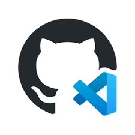
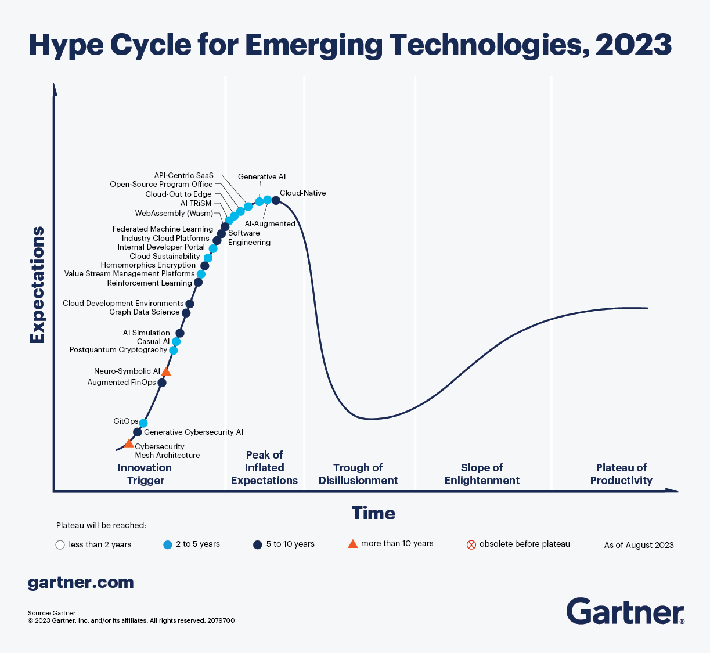

class: center, middle # **Cloud Developer Environments ** Richard Griffiths Abberation at Confused.Com ??? --- # Agenda 1. What are Cloud Developer Environments? 1. What capabilities do they have? 1. Disclaimer 1. Demo 1: This presentation is one! 1. Demo 2: Intro gitpod workspace 1. Demo 3: Dotnet API 1. Demo 4: Terraform Azure Platform Template 1. Goldratt the Technology 1. Demo 5: Event Catalog 1. What next? ??? --- # What are Cloud Developer Environments? * Ephemeral developer environments that run on containers * Extremely configurable and consistent for all users * Create any source controlled environment you want and startup scripts in seconds * [Gitpod](https://gitpod.io/) and [github codespaces](https://github.com/features/codespaces) are the most well known * Where docker containers solved "it works on my machine"... * Cloud developer environments solve "so that's how I got that to work on my machine!"  ??? --- # Gartner 2023  ??? --- # What capabilities do they have? ??? --- # What capabilities do they have? * Lightning fast consistent developer environments * Based on container images so limitless platform e.g. [gitpod images](https://hub.docker.com/r/gitpod/workspace-full) * Configurable startup scripts to run in set orders * Prebuilds allow for faster startups * Share workspace with colleagues for testing and debugging * Environment variables * Gitpod uses yaml configuration and codespaces uses JSON * VS Code browser, desktop, Jetbrains rider etc * Gitpod is Github, Bitbucket and Gitlab, Codespaces is github only * Gitpod allows for private hosting ??? --- # Disclaimer  **This is Tech Wowsers of the Potential Futuresphere!** ### Remain Calm --- # Demo 1: This presentation is one! * It is indeed overkill but this presentation was actually developed and is running in a cloud developer environment. ```yaml tasks: - name: Start web server command: | cd 00000000_template python -m http.server 8000 ports: - port: 8000 onOpen: open-preview visibility: public vscode: extensions: - ritwickdey.liveserver - dracula-theme.theme-dracula ``` ??? --- # Did you know? ## If you go to github.dev for any [repo](https://github.com/mr-griffles/template.dotnet.api) in Github it will open up the repoistory in an online Visual studio code editor? ## If you press "." on any file in a [repo](https://github.com/mr-griffles/template.dotnet.api) in Github it will open up the repoistory in an online Visual studio code editor? ??? --- # Demo 2: Intro gitpod workspace [**.gitpod.yml**](https://github.com/mr-griffles/griffles.gitpod.test/blob/main/.gitpod.yml) 1. Inits run only on workspace creation or prebuilds. 1. Before runs every time at start of workspace opening. 1. Commands run in sequence at start of workspace opening. 1. You can have wait commands to ensure things open in order. 1. You can call environment variables. 1. The default image comes with loads of stuff installed! 1. You can open up an application for nice dev experience. 1. You can add specific VS code extensions. ??? --- # Demo 3: Dotnet API [**template.dotnet.api**](https://github.com/mr-griffles/template.dotnet.api) 1. Customised docker image for dotnet. 1. "Cde" nomenclature adopted so can use for gitpod or codespaces. 1. Externalised bash scripts so can be reused across gitpod or codespaces. 1. Prebuilds mean super quick opening times. 1. Developer gets immediate application running on open. 1. Docker running on docker!! 1. Works on everyones machine!!! ??? --- # Demo 4: Terraform Azure Platform template [**template.azure.terraform**](https://github.com/mr-griffles/template.azure.terraform) 1. Created app registration on MSDN subscription. 1. Embedded environment variables. 1. Leverages prebuild. 1. Customized docker container with brew, azure cli and terraform install. 1. Creates state storage. 1. Logs into Azure using environment variables. 1. Initalises and plans terraform on open. 1. Create new repo from template and create container platform in Azure. ??? --- # Goldratt the Technology ## 1. What is the power of the technology? * Any development work in any appropriate language can be carried out on any machine immediately. ## 2. What limitation does it diminish? * No longer need to purchase powerful consistent machines or wait for them to be procured and built ## 3. What rules helped us accommodate the limitation? * Every piece of hardware had to be powerful and configured identically for every developer eventuality ## 4. What rules should we use now? * Hardware can be cheap, lead times for developers can be shortened and the right technology for the specific scenario can be chosen ??? --- # Demo 5: Event Catalog ??? --- # What next? **Disclaimer:** Most might be personally! * Continue to explore pros and cons of gitpod vs codespaces * Create a template for dotnet api backed by cosmos emulator container for easy local dev * Create a template for python api backed by mongo container for easy local dev * Integrate github actions into more templates * Setup an architect cop kick start to talk through event catalog more * Create teaching repos ??? ---